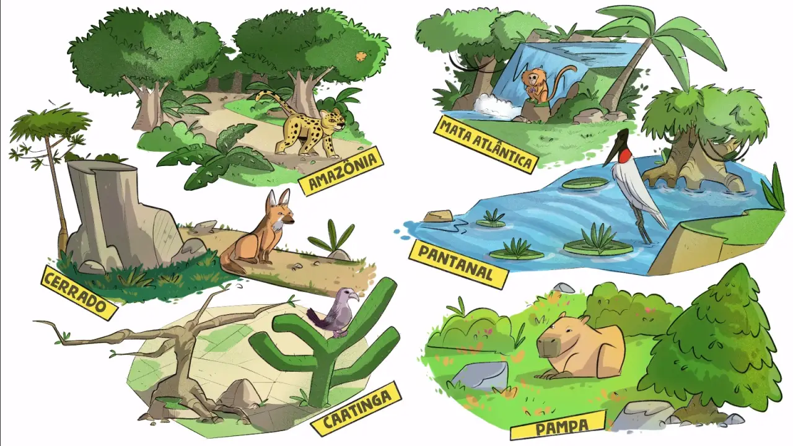

🖱️ Clique em cada bioma do Brasil.

"A Mata Atlântica é um bioma que cobria uma área de 15% do território brasileiro, área essa que incluía os estados de Alagoas, Bahia, Ceará, Espírito Santo, Goiás, Mato Grosso do Sul, Minas Gerais, Paraíba, Paraná, Pernambuco, Piauí, Rio de Janeiro, Rio Grande do Norte, Rio Grande do Sul, Santa Catarina, São Paulo e Sergipe. Originalmente, o referido bioma cobria uma área superior a 1,3 milhões de km2."
A Amazônia é um importante bioma com território que corresponde a 6,9 milhões de km² e abrange nove países: Brasil, Bolívia, Colômbia, Equador, Venezuela, Guiana, Guiana Francesa, Peru, Suriname. A parte brasileira equivale a 4.196.943 km², sendo o maior bioma brasileiro. Além do seu vasto território, outra característica que impressiona é a sua biodiversidade. Na Amazônia existem cerca de 2500 espécies de árvores e de 30 mil espécies de plantas, das 100 mil existentes em toda a América do Sul.
"O Pantanal é um dos menores biomas existentes no Brasil. Sua localização está na região Centro-Oeste, nos estados do Mato Grosso (no sul do estado) e do Mato Grosso do Sul (no noroeste do estado), além de poder ser encontrado no Paraguai e na Bolívia. É um bioma extremamente rico quando o assunto é fauna brasileira, pois abriga grande parte dos animais existentes no Brasil. Sua preservação ambiental é alta, sendo considerado o bioma mais preservado do país de acordo com os órgãos governamentais, como o Instituto Brasileiro de Geografia e Estatística."
"O Cerrado é um bioma localizado no nordeste do Paraguai, no leste da Bolívia e em grande parte do Brasil Central, constituindo cerca de 22% do território brasileiro. No Brasil, a sua área compreende os seguintes estados: Goiás, Mato Grosso, Mato Grosso do Sul, Tocantins, Minas Gerais, Bahia, Maranhão, Piauí, Rondônia, Paraná, São Paulo e Distrito Federal, além de alguns encraves (terreno ou território dentro do outro) no Amapá, no Amazonas e em Roraima. Estima-se que a área abrangida pelo Cerrado no Brasil, segundo o IBGE, alcance 2.036.448 km2 de extensão."
"A Caatinga é um bioma exclusivamente brasileiro, ocupando, aproximadamente, uma área de 734.478 km2, que corresponde a cerca de 70% da região Nordeste e 11% do território nacional. O nome “Caatinga” possui origem tupi-guarani e significa “floresta branca”. Essa denominação representa as características da vegetação desse ecossistema, cujas folhas caem no período da seca."
"O Pampa é um bioma presente no Brasil, Argentina e Uruguai, sendo uma das áreas mais importantes do Sul do Brasil. Ele ocupa a região do Rio Grande do Sul e estende-se para o Uruguai e Argentina, com áreas de planícies e campos. É o bioma mais ameaçado do Brasil, devido ao desmatamento e atividades humanas, mas é também rico em fauna e flora."